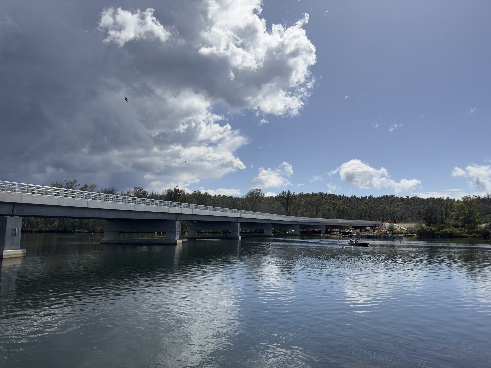
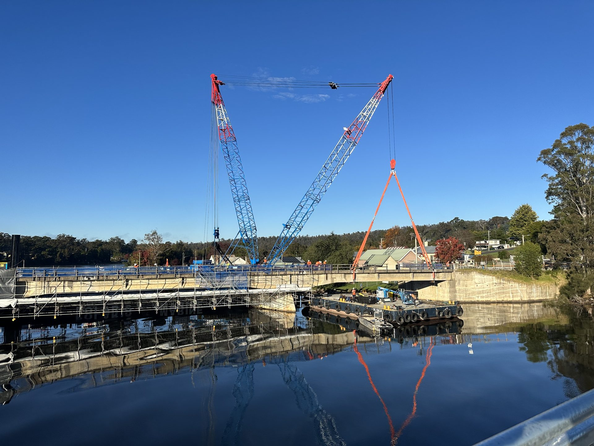
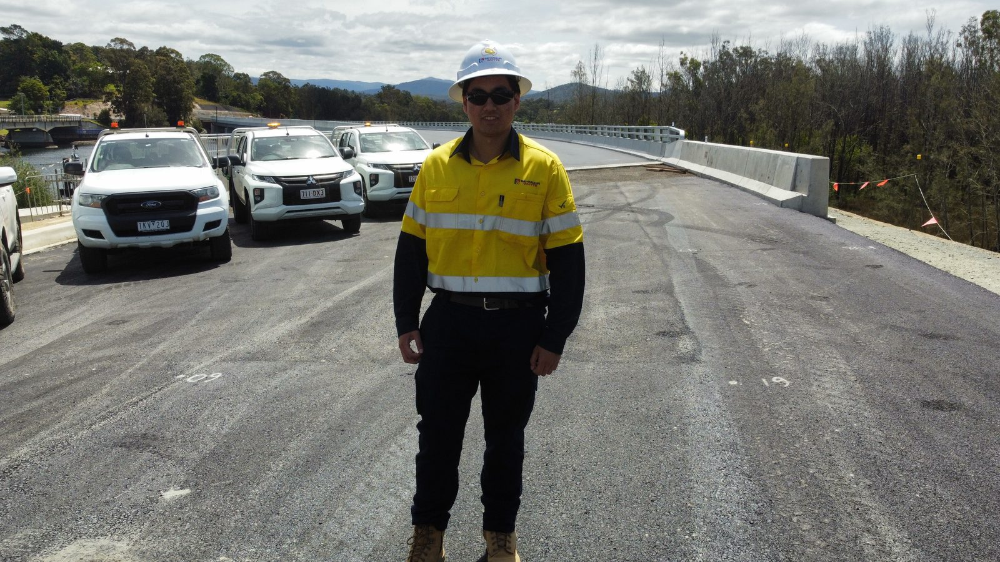
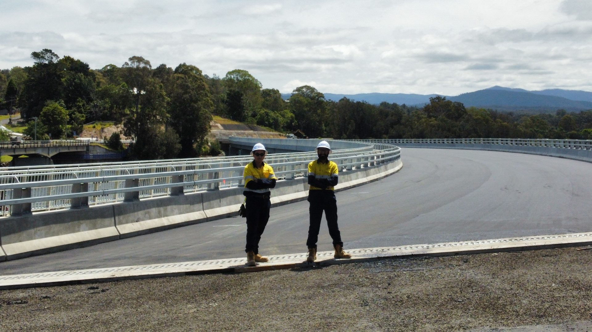
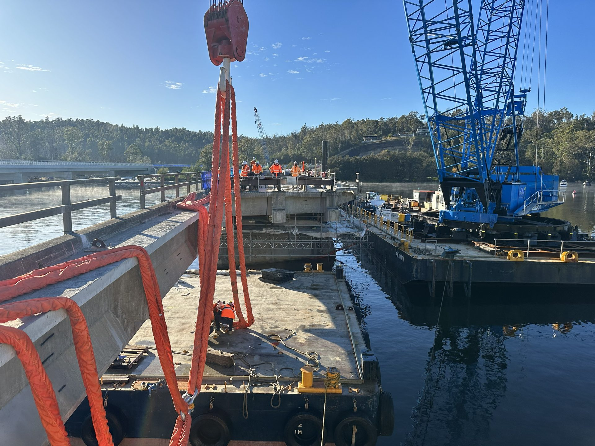
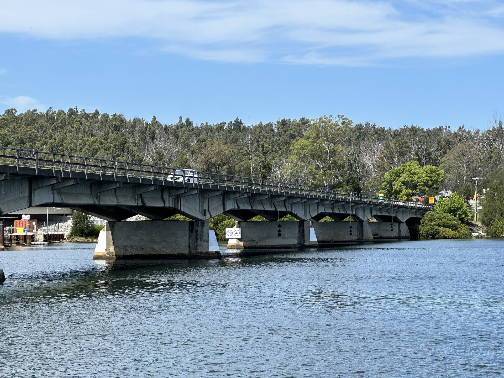

Undergrad Engineer · Nelligen Bridge

A $148M state infrastructure project on the NSW South Coast — two summers across site works, procurement, and TfNSW closeout.
The Nelligen Bridge Replacement is a major Transport for NSW project delivered under strict regulatory and environmental constraints. As an undergrad engineer with Seymour Whyte, I was embedded on site across two seasons — first time watching real engineering decisions get made under real schedule and budget pressure. Different scale to a CAD model.
Day-to-day: cost and material tracking for live infrastructure works, coordinating procurement and on-site workflows with engineers and leading hands, and running QA close-out activities including TfNSW redline markups and lot completion. Toward the end of the project, supported closeout documentation and compliance requirements in collaboration with Transport for NSW and local council stakeholders.





Embedded with the Seymour Whyte site team — cost and material tracking for live works, coordinating procurement workflows, and interfacing with engineers and leading hands. Learned how real infrastructure decisions get made: under schedule pressure, with incomplete information, and always with the regulatory and environmental constraints in view.
Led QA close-out activities including TfNSW redline markups and lot completion. Supported final project closeout documentation and compliance sign-off in collaboration with Transport for NSW and local council stakeholders on a $148M infrastructure delivery.
Two summers of this recalibrated what "real engineering" means. Everything has a cost, a schedule, a stakeholder, and a regulation attached. The CAD model is the easy part. Understanding how a $148M project actually gets delivered — that was the lesson.